Astra Linux — операционная система (ОС) специального назначения на базе ядра Linux, была создана для нужд органов государственного и военного управления и других учреждений, которые работают с информацией ограниченного доступа.
Разработка Astra Linux была начата в 2008 году АО «НПО РусБИТех» при участии Министерства обороны РФ. Встроенные средства защиты ОС разработаны совместно с Академией ФСБ России и Институтом системного программирования РАН. В конце 2009 года впервые появилась свободно распространяемая версия ОС общего назначения Astra Linux Сommon Edition (релиз «Орёл»), репозиторий которой размещен в открытом доступе международной некоммерческой организации The Linux Foundation.
Операционная система общего назначения Astra Linux Common Edition представляет собой несертифицированный, свободно распространяемый дистрибутив, не предназначенный для коммерческого использования. Astra Linux Special Edition — это сертифицированная ОС со встроенными средствами защиты информации (СЗИ) для стабильной и безопасной работы ИТ-инфраструктур любого масштаба и обработки информации различной степени конфиденциальности.
Каждый вариант исполнения имеет номер, состоящий из двух или трёх чисел:
- Код дистрибутива.
- Номер очередного обновления.
- Номер оперативного обновления(опционально)
Оперативные обновления предназначены для оперативного устранения критических уязвимостей и уязвимостей высокого уровня опасности в экземплярах очередных обновлений операционной системы, находящихся в эксплуатации, и представляют собой бюллетень безопасности, который доступен в виде:
- инструкций и методических указаний по настройке и особенностям эксплуатации операционной системы, содержащих сведения о компенсирующих мерах или ограничениях по применению операционной системы при эксплуатации;
- отдельных программных компонентов из состава операционной системы, в которые внесены изменения с целью устранения уязвимостей, инструкций по их установке и настройке, а также информации, содержащей сведения о контрольных суммах всех файлов оперативного обновления;
- обновлений безопасности, представляющих собой файл с совокупностью программных компонентов из состава операционной системы, в которые внесены изменения с целью устранения уязвимостей, а также информацией, содержащей сведения о контрольных суммах всех файлов обновлений безопасности, указания по установке, настройке и особенностям эксплуатации ОС с установленными обновлениями безопасности.
Код дистрибутива может содержать четвёртую цифру. Она обозначает номер исправления ОС, устраняющего ошибки в работе её компонентов.
Уровни защищённости ОС Astra Linux
Впервые в российской практике в одном релизе Astra Linux Special Edition реализованы несколько уровней защиты, включая безопасную среду виртуализации, на выбор заказчика и с учётом данных о модели нарушителей и актуальных для организации угроз. Усиленный уровень защищённости, именуемый «Воронеж».
Рекомендуется для обработки конфиденциальной информации в государственных информационных системах (ГИС), в информационных системах персональных данных, а также в составе значимых объектов критической информационной инфраструктуры (КИИ) любого класса (уровня, категории) защищённости. Дополнительно используется в других информационных (автоматизированных) системах для обработки информации ограниченного доступа без содержания сведений, составляющих гостайну. Максимальный уровень защищённости, именуемый «Смоленск». Рекомендуется для обработки информации любой категории доступа в ГИС, в информационных системах персональных данных, в составе значимых объектов КИИ, иных информационных (автоматизированных) системах, обрабатывающих информацию ограниченного доступа, в том числе содержащую сведения, составляющие гостайну, до степени особой важности включительно. Допустимый уровень защищённости определяется приобретённой лицензией на использование операционной системы.
Жизненный цикл ОС Astra Linux
Каждая редакция ОС имеет свой жизненный цикл, на протяжении которого разработчики сначала дорабатывают систему, а затем следят, чтобы все найденные уязвимости были исправлены. После окончания периода поддержки ОС продолжит работать, но значительно возрастёт риск потери или компрометации данных. Окончание срока ограниченной поддержки означает прекращение выпуска любых обновлений. Жизненный цикл для редакции ОС семейства Astra Linux выглядит следующим образом:
- Разработка — разработка и выпуск очередного обновления, поколения ОС;
- Развитие — разработка и выпуск оперативных и срочных обновлений, направленных на исправление ошибок и устранение уязвимостей, с возможностью включения доработанной или новой функциональности;
- Поддержка — выпуск оперативных и срочных обновлений, направленных только на исправление ошибок и устранение уязвимостей;
- Ограниченная поддержка — консультации по эксплуатации ОС на первой и второй линии поддержки, поддержка третьей линии исключена;
- Вывод из поддержки — поддержка и консультации по ОС не производятся.
Поддержка предыдущего поколения ОС не заканчивается после выхода очередного обновления ОС, она продолжит выполнять свои функции. Вместе с тем рекомендуется отказаться от использования устаревших поколений ОС и перейти на современное поколение.
Документация и справочные ресурсы На официальном сайте Astra Linux размещены руководства пользователя, администратора, другие материалы и документация.
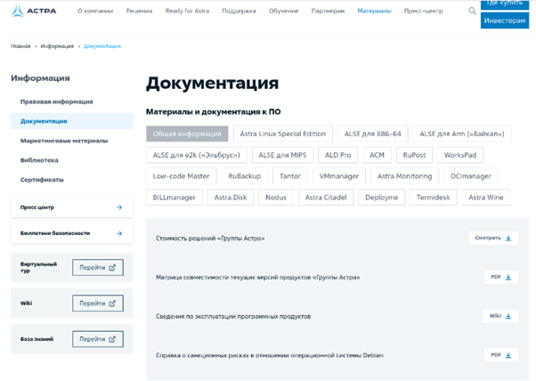Базовое администрирование ОС Astra Linux Special Edition 1.8. Графические инструменты
Электронная справка Astra Linux имеет интуитивно понятный графический интерфейс и включает справочные материалы как по самой системе Astra Linux, так и по установленным пользовательским приложениям.
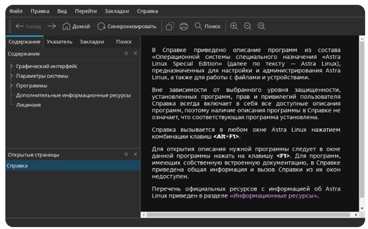В справочном центре «WIKI-библиотека» содержится постоянно актуализируемая база знаний, а также он является официальным источником получения оперативных обновлений операционной системы.
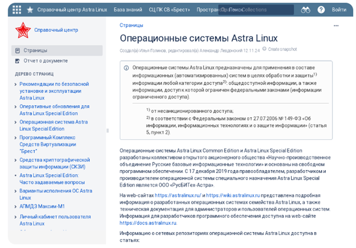Заключение Вы закончили ознакомление с материалами первого модуля. Теперь вы знаете, какая версия Astra Linux является последней и когда она вышла, с каким кодом можно установить дистрибутив Astra Linux на ПК с процессорной архитектурой x86-64. Кроме того, вы ознакомились с уровнями защищённости ОС, а также рекомендациями по их использованию. Для закрепления знаний ответьте на вопросы промежуточного тестирования.
Процесс загрузки ОС
Данный модуль содержит основные сведения о стадиях загрузки ОС. Вы ознакомитесь с загрузчиком ОС, его функциями и основными возможностями и настройки. Также в модуле рассматривается программа, которая позволяет управлять запуском системных и пользовательских служб. В качестве дополнительного материалов в приводится список с параметрами загрузки, передаваемых ядру при загрузке ОС.
Порядок загрузки ОС
При подаче питания процессор начинает выполнять код BIOS (Basic Input/Output System, в устаревших системах), либо UEFI (Unified Extensible Firmware Interface, в современных системах), который производит инициализацию оборудования и помещает в оперативную память загрузчик. Далее загружается программа-загрузчик из записи MBR (Master Boot Record, для BIOS) либо с EFI-раздела (для UEFI) загрузочного устройства. В современных системах семейства Linux в роли загрузчика обычно выступает GRUB2 (GRand Unified Bootloader).
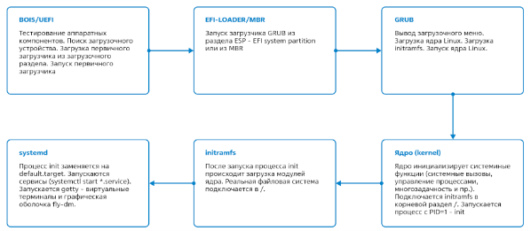GRUB2 отображает варианты загрузки и, после выбора одного из вариантов, загружает в оперативную память ядро Linux, а также образ файловой системы initramfs. Затем управление передаётся ядру. Ядро linux инициализирует наиболее важные функции (механизм системных вызовов, планировщик задач и т.д.). Монтирует в корневой раздел образ initramfs и запускает процесс init. initramfs — образ диска, загружаемый в оперативную память, который содержит минимальную структуру каталогов и файлов для работы Linux. Его основная задача — обеспечить загрузку драйверов (модулей ядра) устройств, пока еще основной раздел не доступен как раз из-за незагруженных драйверов. init — сценарий, выполнение которого подключает необходимые модули ядра, размещенные в initramfs. После загрузки драйверов уже можно смонтировать системный раздел. Монтируется устройство с системой, и процесс init замещается службой systemd. Служба systemd запускает службы, виртуальные терминалы и графическую подсистему. Отображается экран авторизации, система ожидает входа пользователя.
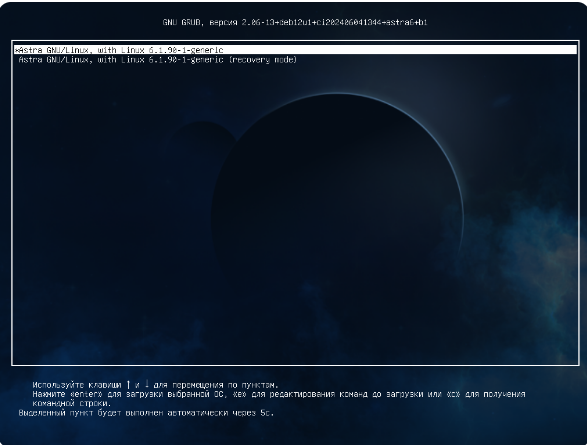Загрузчик GRUB2: выводит окно загрузчика, позволяет отредактировать меню (разово изменить параметры загрузки), также предоставляет командную строку, схожую с bash; умеет обеспечивать загрузку нескольких ОС; имеет модульную структуру, позволяет загружать драйверы для распознавания файловых систем; загружает ядро Linux, образ initramfs в память, передаёт управление ядру.
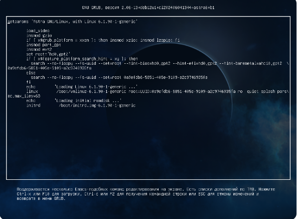Чтобы отредактировать выбранный пункт меню, следует нажать клавишу e (в латинской раскладке), ввести имя администратора системы (учётная запись пользователя, созданная при установке ОС) и пароль, установленный на GRUB. Механизм редактирования схож с таковым в обычном текстовом редакторе. Внесённые изменения будут применены только один раз. Некоторые параметры загрузки указаны в разделе $ Дополнительные материалы$ . Для выполнения загрузки с указанными параметрами следует нажать клавишу F10. Вернуться к выбору пункта меню можно с помощью клавиши Esc. Внесённые изменения будут отменены.
Загрузка ядра
Ядро — набор подпрограмм, используемых: для организации доступа к ресурсам компьютера; обеспечения запуска и взаимодействия процессов; проведения политики безопасности системы; других действий, которые могут выполняться только в режиме полного доступа (в так называемом режиме супервизора).
Все ядра находятся в самораспаковывающемся, сжатом формате для экономии места. Ядра расположены в каталоге /boot (например, vmlinuz-6.1.90-1-generic) вместе с исходным образом диска initramfs (например, initrd.img-6.1.90-1-generic) и списком разделов на жестких дисках (System.map-6.1.90-1-generic). Ядро Linux монолитное, драйверы устройств хранятся прямо в нём. Однако, большая часть периферийных устройств не имеет драйверов в ядре Linux. Вместо этого в оперативной памяти распаковывается ещё один файл во временной файловой системе — initrd.img. После того как выбранное ядро загружено в память и начинает исполняться, в первую очередь, оно должно извлечь само себя из сжатой версии файла. В процессе запуска ядра настраивается оборудование, запускается менеджер памяти, планировщик задач и многое другое, необходимое для функционирования операционной системы. Systemd
Systemd — комплекс программ, экосистема которых формируется вокруг одноименной службы. Служба systemd — система инициализации, «корневой» родитель всех процессов пользовательского пространства. Управляет службами и целевыми состояниями. Использует агрессивное распараллеливание запуска служб, используя сокеты и системную шину dbus. Системная шина dbus позволяет приложениям обмениваться сообщениями. Systemd и ее службы предоставляют ряд инструментов для dbus. Целевое состояние ОС может включать в себя различные параметры, такие как настройка системных служб, драйверов устройств, обновление безопасности и другие факторы, которые влияют на стабильность и производительность системы. Целью является достижение и поддержание этого состояния для обеспечения надежной и беспроблемной работы операционной системы в долгосрочной перспективе.
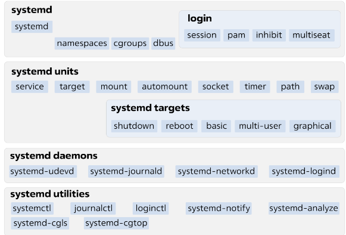Основные компоненты systemd:
- systemd — основная служба, управляет процессами пользовательского пространства, в частности службами;
- юнит (unit) — основная единица systemd. Примерами юнитов являются службы, целевые состояния. Основные службы systemd:
- systemd-journald — служба регистрации событий, тесно интегрированная с systemd. Регистрирует сообщения системного журнала (syslog), ядра (kernel log), сообщения службы, выводимые в стандартные потоки вывода и ввода;
- systemd-networkd — служба управления сетевыми соединениями. Обнаруживает и настраивает сетевые соединения;
- systemd-logind — служба, управляющая входом пользователей в систему, пользовательскими сеансами, созданием текстовых терминалов при активации виртуальной консоли, обработкой клавиш сна/выключения и рядом других связанных возможностей;
- systemd-udevd — служба управления событиями устройств. Служба прослушивает события, поступающие от ядра, и реагирует на них: в частности, создает/удаляет файлы устройств в каталоге /dev при подключении или отключении соответствующих устройств.
Unit-файлы — конфигурационные файлы для systemd. Типы unit-файлов:
- служба (.service);
- целевое состояние (.target);
- путь (.path);
- таймер (.timer);
- монтирование (.mount) и автомонтирование (.automount);
- устройство (.device);
- подкачка (.swap).
Иногда возникает необходимость отключить компоненты системы (службы), подключаемые при запуске системы. Это может потребоваться если какая-либо служба работает некорректно или необходимо запретить использование, например, аудиоустройств. Управление службами осуществляется с помощью программы Инициализация системы, которую можно запустить из меню Пуск — раздел Система группы Параметры.
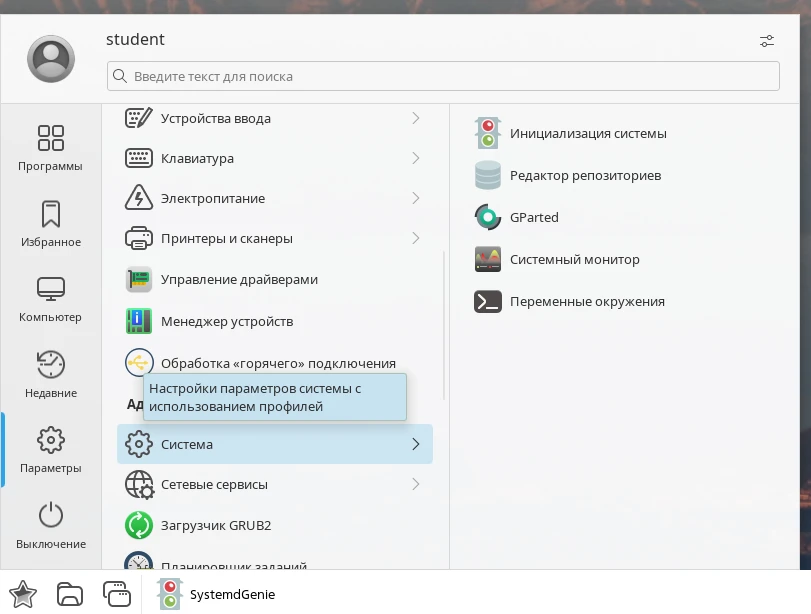Инициализация системы позволяет управлять запуском системных и пользовательских юнитов, настраивать сеансы logind, конфигурировать таймеры и периодические работы, просматривать и изменять файлы конфигурации systemd.

В верхней части окна отображается главное меню, содержащее следующие пункты:
- Файл — позволяет выйти из программы;
- Вид — позволяет обновить список;
- Демон — позволяет перечитать конфигурацию или перезапустить systemd;
- Юнит — содержит пункты для управления выбранным юнитом: остановить, перезапустить, отключить, и т. д.
- Сеанс — содержит пункты для управления выбранным сеансом: завершить, заблокировать и активировать;
- Настройка — позволяет выполнить настройку программы (комбинации клавиш, а также отображение панелей инструментов);
- Справка — справочная информация.
Ниже отображается панель инструментов, на которой по умолчанию отображаются кнопки управления выбранным юнитом (запустить, остановить и перечитать конфигурацию), а также кнопка редактирования выбранного конфигурационного файла.
Под панелью инструментов отображаются вкладки, которые содержат списки в виде таблицы:
- Системные юниты;
- Пользовательские юниты;
- Конфигурационные файлы;
- Сеансы;
- Таймеры.
Настройка GRUB
Настройка GRUB производится с помощью графических инструментов или путём изменения файлов конфигурации. Основной способ — раздел Загрузчик GRUB2 в параметрах системы. Перейти к нему можно с помощью соответствующего пункта меню Пуск в группе Параметры. Также в меню Пуск можно выбрать пункт Параметры системы, а затем выполнить переход. Для изменения параметров загрузчика потребуется ввести пароль администратора.
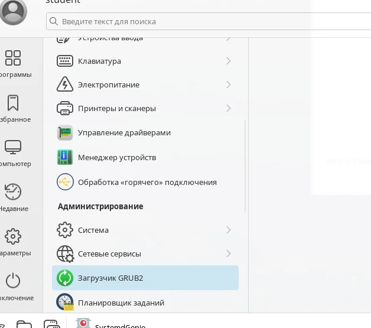Программа содержит три вкладки:
- Основное, на которой можно настроить следующие параметры:
- Запись по умолчанию — из списка устанавливается запись загрузки по умолчанию (позволяет выбрать версию ядра);
- флаг Следующая запись станет загружаемой по умолчанию — позволяет использовать выбранную при загрузке запись в дальнейшем по умолчанию;
- флаг Автоматически загружать запись по умолчанию — включает переключатели Немедленно и Через для установки автоматической загрузки записи по умолчанию, соответственно, сразу после показа меню загрузки или по истечении определенного времени. Справа от пункта Через в поле указывается количество секунд задержки;
- Язык — выпадающий список для установки языка сообщений;
- флаг Проверка наличия операционных систем — включает проверку наличия операционных систем на других разделах дискового пространства.
- Внешний вид, которая содержит инструменты для настройки вешнего вида меню загрузчика. 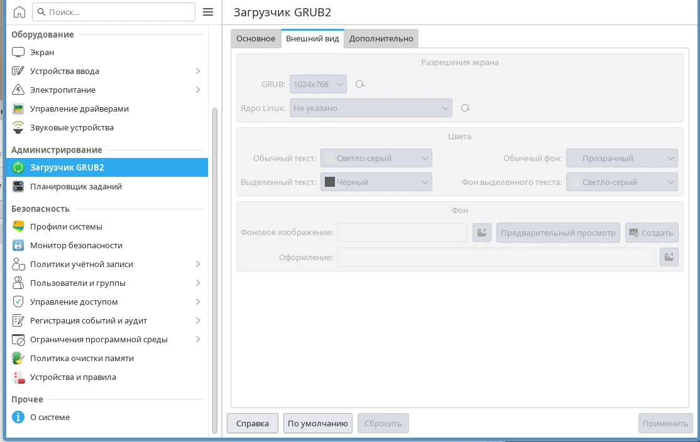
- Дополнительно, на которой можно настроить следующие параметры:
- поле Параметры ядра Linux — в строках ввода Обычные записи и Все записи устанавливаются значения параметров, передаваемых ядру Linux соответственно при загрузке обычной записи (пункт меню для загрузки ОС) и любой записи. Список Предложения (справа от каждой из строк) содержит флаги для быстрого ввода соответствующих параметров;
- поле Терминал — строки ввода Терминал для ввода и Терминал для вывода заполняются при необходимости использовать нестандартные устройства ввода и (или) вывода (например, при удаленном администрировании). Список Предложения (справа от каждой из строк) содержит флаги для быстрого ввода соответствующих параметров;
- Дистрибьютор — в строке устанавливается название текущего дистрибутива. Отображается в соответствующей записи в меню выбора ОС;
- Команда для последовательного порта — устанавливается команда настройки последовательного порта при использовании последовательной консоли (ввести путь к последовательному устройству ttyS (аналог com для Win));
- Проиграть мелодию — в строке путь к файлу со звуковым сигналом, воспроизводимым при запуске. 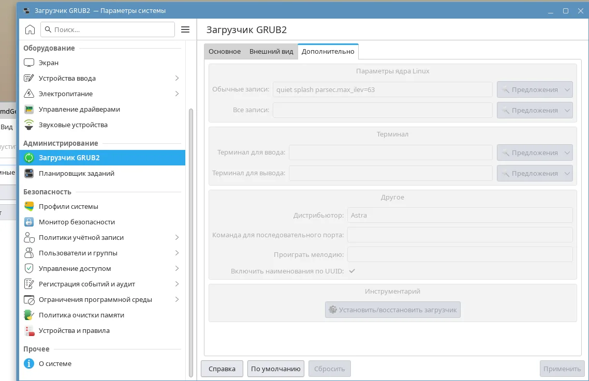
Для сохранения изменений следует нажать кнопку Применить.
Все указанные параметры GRUB сохраняются в файл /boot/grub/grub.cfg. Этот файл не стоит редактировать вручную. При внесении новых параметров GRUB, например, через программу Загрузчик GRUB2, файл будет перезаписан. При включении компьютера отображается меню загрузчика GRUB. Оно формируется исходя из указанных выше параметров. Одним из пунктов меню является режим восстановления. В строке с таким пунктом будет указано (recovery mode).
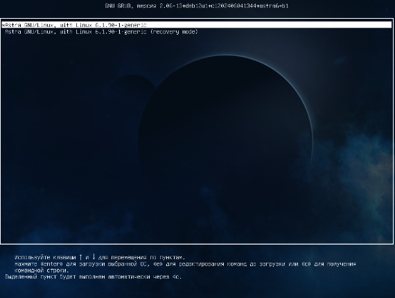Он позволяет запустить операционную систему без графического интерфейса в целях её настройки и отладки
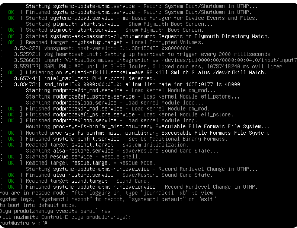На данном этапе мы не будем рассматривать работу в таком режиме.